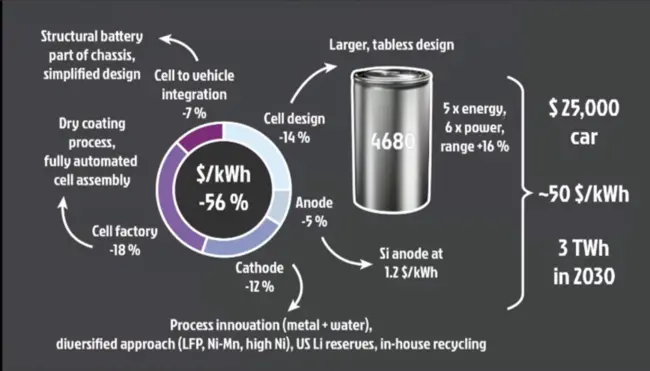
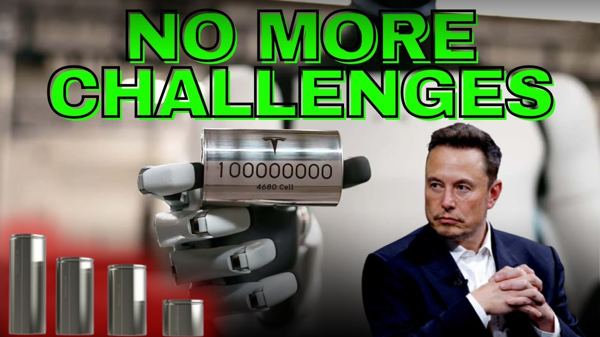
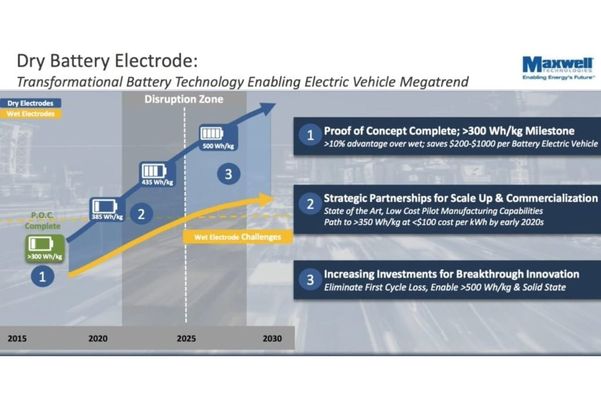
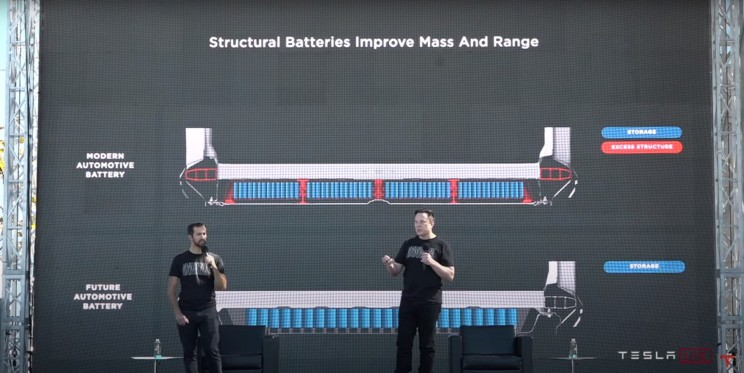

Tesla's 4680 battery technology represents a significant leap forward in electric vehicle (EV) battery design, aiming to enhance energy density, reduce costs, and streamline production. However, the path to realizing this vision has been fraught with technical hurdles. This newsletter explores how Tesla has navigated these challenges and the implications for its future.
Key Innovations of the 4680 Battery
- Larger Form Factor: The 4680 battery's size allows for more active materials, which increases energy density. This design promises longer ranges for EVs and improved performance in energy storage systems.
- Tabless Design: By eliminating tabs that traditionally connect individual cells to the battery pack, Tesla has improved current distribution and reduced internal resistance. This innovation enhances efficiency and lifespan while minimizing heat generation.
- Dry Electrode Technology: A major breakthrough came with the development of dry electrode manufacturing processes, which simplify production compared to conventional wet methods. This change not only reduces costs but also lowers environmental impact by minimizing chemical waste.

Challenges Faced
Despite these innovations, Tesla encountered significant obstacles:
- Production Scale-Up: Initially, scaling production proved difficult due to the complexity of the dry coating process. Engineers faced challenges in ensuring precision during electrode manufacturing, which is critical for performance and safety.
- Equipment Limitations: The high-speed winding of electrode sheets led to breakages, and existing equipment struggled to meet the required precision. Upgrading to more advanced machinery was necessary but costly.
- Heat Management: The larger size of the 4680 cells generated more heat than previous models, raising concerns about safety and longevity. This necessitated innovative thermal management solutions.
- Mastering Electrolyte Impregnation: Traditional techniques fall short for 4680 batteries. The new technology demands a more complex electrolyte with superior wetting properties and a more diverse coating structure.

- Combating Negative Electrode Lithium Plating: The 4680 battery relies on high-performance negative electrode materials that are more susceptible to uneven lithium plating during production. This inconsistency can lead to reduced battery capacity.
- Achieving Optimal Crystal Orientation: Crystal orientation significantly impacts battery performance and uniformity. However, achieving this orientation in 4680 batteries presents challenges due to the complex interplay of crystal directions.
- Balancing Ternary Material Performance: The 4680 battery utilizes ternary materials prized for their high discharge voltage, extended cycle life, and superior energy density. However, these materials undergo complex chemical reactions, making it difficult to achieve a perfect balance in performance.
Turning Points in Development
In mid-2023, under pressure from CEO Elon Musk, Tesla's engineering team made significant strides in overcoming these hurdles:
- Dry Cathode Breakthrough: By late 2022, engineers successfully manufactured large quantities of dry cathode sheets, which marked a turning point in production capabilities. This achievement allowed for a more consistent manufacturing process.

- Increased Production Capacity: As of September 2024, Tesla announced it had produced its 100 millionth 4680 cell, doubling its output since earlier milestones. This rapid increase reflects improvements in both technology and manufacturing processes.
- Integration into Vehicle Design: The 4680 cells are not just power sources; they also serve as structural components within vehicles like the Cybertruck. This integration reduces overall vehicle weight and manufacturing complexity by minimizing the need for additional welding.
Future Implications
Tesla's advancements with the 4680 battery are poised to transform the EV landscape:
- Cost Reductions: The company aims to cut battery production costs by up to 50%, which could make electric vehicles more accessible to consumers and accelerate market adoption.
- Sustainability Initiatives: With a focus on reducing reliance on cobalt and utilizing less toxic materials, the 4680 battery could lead to a greener production process within the industry.
- Competitive Edge: As Tesla scales up its production capabilities, it may share its technological advancements with other manufacturers, potentially reshaping competitive dynamics in the EV sector.

Conclusion
Tesla's journey with the 4680 battery illustrates both the challenges and triumphs inherent in pioneering new technologies. By overcoming significant technical hurdles through innovative engineering and strategic adjustments, Tesla is not only enhancing its product lineup but also setting new standards for the entire electric vehicle industry. As production ramps up and costs decrease, the impact of these developments will likely resonate well beyond Tesla itself.